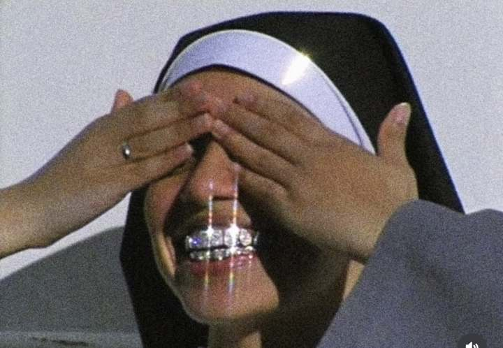

Equipamento
Meu setup
Cinco peças. Sem excesso.
Ficha técnica
Minhas configs de CS2
Os valores que uso no servidor.
VÍDEO1280×960RESOLUÇÃO
MOUSE400 DPIHARDWARE
MOUSE1.35 SENSNO JOGO
RESULTADO540 eDPI400 × 1.35 = 540
VÍDEO
- Resolução
- 1280 × 960
- Proporção
- 4:3
- Imagem
- Stretched
MOUSE
- DPI
- 400
- Sensibilidade
- 1.35
- eDPI
- 540
GRÁFICOS
- Qualidade
- Tudo no Low
Copia todos os valores como texto.
Estilo de jogo
No face.
No trace.
No trace.
Less talk.
More frags.
More frags.
Precision
over noise.
over noise.
Built for
the clutch.
the clutch.
Unseen. Unheard.
Unperson.
Unperson.
Sobre
unperson
A name without a face. A presence without a trace.
Counter-Strike 2. Mentalidade competitiva. Nada além do necessário.